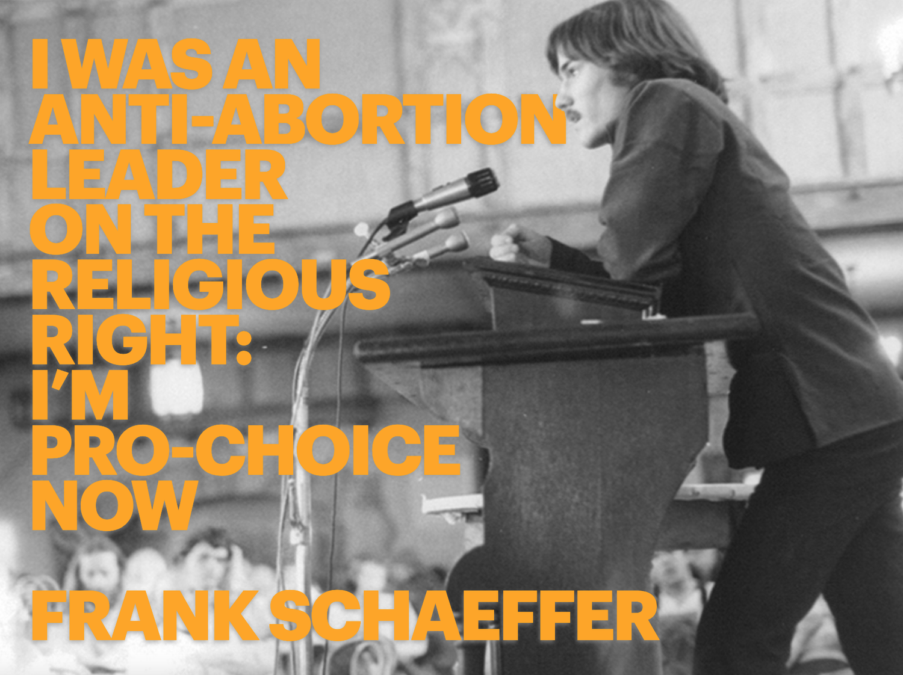
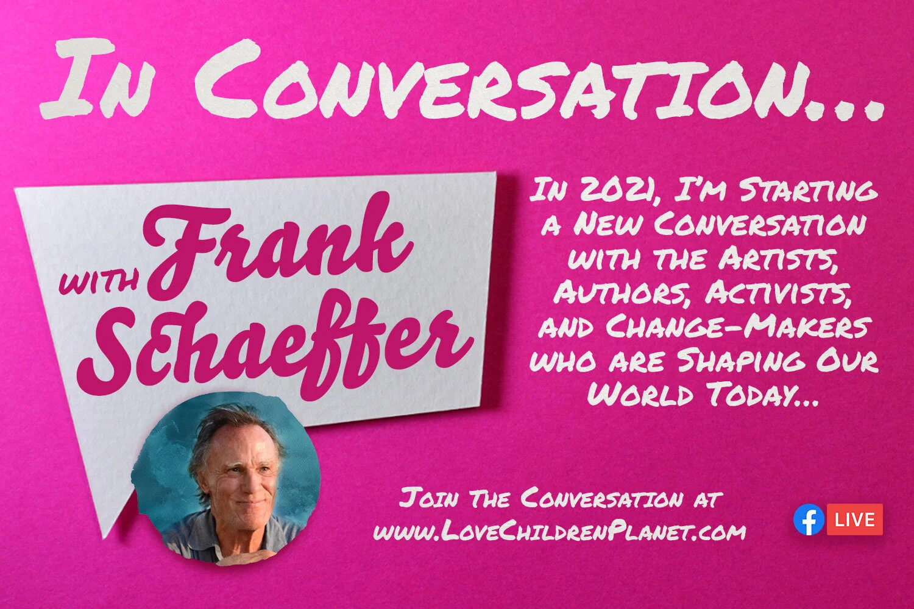

Projects

I WAS AN ANTI-ABORTION LEADER…2020-09-21Illustrated Article by Frank Schaeffer for distribution to media outlets during late 2020 Supreme Court nomination process.
In Conversation… with Frank Schaeffer2021-07-01In 2021, I began producing the Facebook Live Series and Podcast, In Conversation… with Frank Schaeffer , a Production of the George Bailey Morality in Public Life Fellowship .Love In Common2023-01-10In 2023, I began co-hosting the Podcast, Love In Common with Frank Schaeffer and Erin Bagwell .